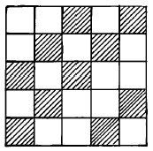
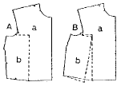
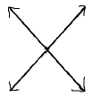
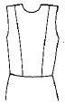
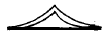
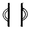
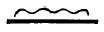

패션디자인산업기사 (2002-05-26 기출문제)
1과목: 피복재료학
1. 그림에 표시된 조직의 이름은?

- 평직
- 2/3능직
- 주자직
- 11/12능직
(정답률: 알수없음)

2. 다음의 재생섬유 중 독특한 광택과 촉감을 가지고 있으며 외관적으로는 견 섬유와 가장 흡사한 모양을 가진 것은?
- 구리암모늄 레이온
- 비스코스 레이온
- 폴리노직 레이온
- 특수비스코스 레이온
(정답률: 알수없음)
3. 면섬유가 가지는 구조나 형태가 아닌 것은?
- 천연꼬임
- 리본상
- 중공
- 스케일
(정답률: 알수없음)
4. 다음 중 수지가공의 목적을 바르게 설명한 것은?
- 양털섬유에 대한 방축융성의 부여
- 습윤 강도의 감소
- 직물에 삼과 같은 컷 모양과 굳기를 주는 가공
- 원단의 풀을 제거하여 아름답고 풍부한 촉감 부여
(정답률: 알수없음)
5. 폴리에스테르 섬유에 주로 사용되는 염료는?
- 분산염료
- 황화염료
- 산성염료
- 직접염료
(정답률: 알수없음)
6. 다음 중 필라멘트사의 굵기를 주로 표시하는 것은?
- metric count
- lea
- denier
- 's
(정답률: 알수없음)
7. 다음 중 능직(사문직)으로 된 것은?
- 광목
- 도우스킨
- 개버딘
- 벨루어
(정답률: 알수없음)
8. 다음 섬유 중 비중이 가장 가벼운 것은?
- 나일론
- 석면
- 폴리프로필렌
- 데트론
(정답률: 알수없음)
9. 다음 중 수자직의 특성을 나타낸 것은?
- 사문선이 있다.
- 교차점이 가장 많다.
- 부드럽고 매끄럽다.
- 표리가 없다.
(정답률: 알수없음)
10. 다음 번수 표시 방법중 MKS 단위가 아닌 것은?
- 영국식 번수
- 공통식 번수
- 데니아식 번수
- 텍스식 번수
(정답률: 알수없음)
11. 견본의 크기가 8cm × 10cm 이며 그 무게가 2.12 g인 경우 소모직물 1m2 인 무게(g)는?
- 37.7
- 169.6
- 212
- 265
(정답률: 알수없음)
12. 다림질이 잘 되는 것은?
- 섬유 내부의 분자간 이온결합이 많은 섬유
- 섬유 내부의 분자간 공유결합이 많은 섬유
- 섬유 내부의 분자간 수소결합이 많은 섬유
- 섬유 내부의 분자가 건조한 섬유
(정답률: 알수없음)
13. 다음 중 제직방법이 나머지와 다른 것은?
- 레이스
- 직물
- 부직포
- 트리코트
(정답률: 알수없음)
14. 다음은 방적섬유로서 구비하여야 할 요건들이다. 이들 중 가장 상관이 없는 것은?
- 내구성
- 포합성
- 가소성
- 활탈성
(정답률: 알수없음)
15. 견섬유의 단면 모양은?
- 원형
- 리본상
- 삼각형
- 다각형
(정답률: 알수없음)
16. 다음 중 레이온 직물의 용도로 가장 적당한 것은?
- 수영복
- 안감
- 손수건
- 스타킹
(정답률: 알수없음)
17. 스테이플 파이버란?
- 연속 필라멘트를 방적용 길이로 짜른 것
- 연속 필라멘트의 표준말
- 면섬유의 대명사
- 양모섬유의 대명사
(정답률: 알수없음)
18. 여러가지 섬유 중에서 폴리에스테르 섬유가 가지고 있는 우수한 특성인 것은?
- 탄성적인 성질이 우수하고 내열성이 높다.
- 마찰 강도가 크다.
- 흡습성이 매우 좋다.
- 암모니아 용액에 잘 견디어 낸다.
(정답률: 알수없음)
19. 분자구조 중 -CONH-를 가지는 섬유는?
- 폴리아크릴
- 폴리비닐알코올
- 폴리에스테르
- 폴리아미드
(정답률: 알수없음)
20. 벌키(bulky)가공사 제조에 가장 적당한 섬유는?
- 나일론
- 아크릴
- 폴리프로필렌
- 비닐론
(정답률: 알수없음)
2과목: 패션디자인론
21. 복식의 장식 방향이 다른 하나는?
- 헤닝(hennin)
- 빠니에(panier)
- 트레인(train)
- 쇼핀느(chopine)
(정답률: 알수없음)
22. 패션용어에 많이 사용되는 클래식(classic)의 특징은?
- 스포티한 스타일을 말한다.
- 트랜디한 스타일을 말한다.
- 사용되는 기간이 짧은 것이 특징이다.
- 사용되는 기간이 긴 것이 특징이다.
(정답률: 알수없음)
23. 키가 작은 체형인 사람이 선택할 디자인은?
- 너무 많은 디테일은 피하고 되도록이면 간단한 디자인을 택한다.
- 큼직한 디자인과 액세서리를 택한다.
- 포켓이나 칼라와 같은 디테일을 크게 한다.
- 웨이스트 라인을 약간 로우웨이스트 라인으로 한다.
(정답률: 알수없음)
24. 프린세스 라인의 뉴 룩을 비롯하여 H라인, A라인, Y라인 등 1950년대의 알파벳 라인 시대를 장식한 디자이너는?
- 폴 푸아레(Paul Poiret)
- 가브리엘 샤넬(Gabrielle Chanel)
- 크리스티앙 디오르(Christian Dior)
- 이브 생 로랑(Yves Saint Laurent)
(정답률: 알수없음)
25. 먼셀의 1차색이 아닌 것은?
- 빨강색
- 주황색
- 노랑색
- 보라색
(정답률: 알수없음)
26. 의복디자인에서 조화의 방법으로 옳은 것은?
- 캐쥬얼한 의상에 큰 보석의 악세서리로 악센트를 주었다.
- 독특한 텍스츄어의 경우 특별한 디자인선이 필요하다.
- 재질은 착용자의 개성과 별로 관련없다.
- 무늬없는 옷감의 경우는 디자인선을 효과있게 살린다.
(정답률: 알수없음)
27. 다음 중 트리밍(trimming)에 대한 설명으로 옳은 것은?
- 칼라, 네크라인, 포켓 등이 포함된다.
- 실루엣 속에 장식된 세부적인 부분이란 의미이다.
- 본래의 직물로 봉제 과정에서 제작되는 장식이다.
- 의복에 부가적으로 사용되어 디자인 효과를 높이는 목적을 지닌다.
(정답률: 알수없음)
28. 대칭 균형과 관계 없는 사항은?
- 분배의 공정성을 느낄 수 있다.
- 완전성을 이루고 있다.
- 부드럽고 운동감을 주는 쾌감이 동반된다.
- 안정감이 있고 솔직감과 정적인 느낌을 동반한다.
(정답률: 알수없음)
29. 스타일화가 갖는 특징이라 볼 수 없는 것은?
- 스타일화는 반드시 모든 사람들이 쉽게 알아 볼 수 있어야 한다.
- 스타일화중에는 정확성 보다는 분위기 묘사에 치중하는 것도 있다.
- 스타일화는 특별한 효과를 얻기 위해서 한 부분을 강조할 수 있다.
- 스타일화는 인체의 구조와 움직임이 기본이다.
(정답률: 알수없음)
30. 방사상 리듬을 볼 수 있는 의복의 예가 아닌 것은?
- 고어드 스커트의 절개선
- 칼라 가장자리의 트리밍
- 다아트의 방향
- 스트라이프 바지
(정답률: 알수없음)
31. 움직이고 있는 포즈를 순간적으로 잡기 위해, 빨리 그리는 것을 무엇이라 하는가?
- 실루엣
- 스케치
- 크로키
- 스타일화
(정답률: 알수없음)
32. 다음은 Sproles(1979)의 미래 패션에 대한 예측이다. 맞는 것은?
- 패션 상품 수요의 증가
- 패션 스타일의 획일성
- 디자이너의 영향력 증가
- 의복 디자인의 장식성 강조
(정답률: 알수없음)
33. 색의 상태라는 뜻으로 색채의 강약, 농담의 상태, 즉 명도와 채도를 동시에 직관할 수 있는 용어는?
- 명도(value)
- 색조(tone)
- 채도(chroma)
- 색상(hue)
(정답률: 알수없음)
34. 비대칭 균형을 통하여 얻을 수 있는 디자인의 미적 효과는 어느 것인가?
- 솔직하고 정적인 미
- 단순하고 우아한 미
- 개성이 있고 변화적인 미
- 수동적이고 규범적인 미
(정답률: 알수없음)
35. 인체를 피복하는 의복에 대한 명칭을 설명한 것이다. 다음 용어의 정의 중 옳지 않은 것은?
- 복장:의복을 입어서 나타나는 전체적인 모습을 말한다
- 의상:특수복의 성격으로 연극이나 무대복 등의 의복을 의미한다
- 피복:부속품이나 악세서리를 포함한 의복을 모두 지칭한다
- 의복:신체를 감싸는 것을 의미하며 모자, 장갑, 구두와 같은 부속품도 포함한다
(정답률: 알수없음)
36. 의복에 장식적 디자인을 사용하는 목적이 아닌 것은?
- 흥미를 유발한다.
- 강한 선을 만든다.
- 의복의 개성을 살린다.
- 약점을 커버해 준다.
(정답률: 알수없음)
37. 다음 중 패션디자인의 기본 요소는?
- 선, 색, 가위, 제도용지
- 가위, 바늘, 실, 제도
- 색, 재료, 선, 장식
- 장식,칼라, 소매, 모자
(정답률: 알수없음)
38. 디자인의 원리 중에 경제와 거리가 먼 디자인의 예는 어느 것인가?
- 스타일 라인을 너무 복잡하게 하지 않는다.
- 주제에 일치하는 트리밍을 사용한다.
- 과장된 디자인을 절제한다.
- 배색에서 가능한 다양한 색으로 대비조화를 시킨다.
(정답률: 알수없음)
39. 오스트왈드(Ostwald)의 표색계에서 4원색이 아닌 것은?
- 빨 강
- 노 랑
- 녹 색
- 주황
(정답률: 알수없음)
40. 동화현상이 일어나게 되는 경우가 아닌 것은?
- 복잡한 패턴의 경우
- 두가지 색이 병치적으로 배색된 경우
- 무늬의 폭이 넓을수록
- 무늬의 수가 비교적 많을수록
(정답률: 알수없음)
3과목: 의류상품학 및 복식문화사
41. 상향 전파이론을 뒷받침하는 조건의 특징은?
- 각 집단의 선도자들이 거의 동시에 유사한 선택을 하여야 한다.
- 모든 계층의 사람이 패션에 대한 흥미나 변화에 대한인식을 가지고 있어야 한다.
- 계층간의 교량 역할을 하는 연결자가 반드시 존재하여야 한다.
- 생산에 의한 제품의 공급시기가 전파시기와 일치되어야 한다.
(정답률: 알수없음)
42. 중세 초기 노동할때나 말을 탈 때 남자들만이 입었던 바지는?
- 쉐엥즈
- 꼬르싸아쥬
- 브레
- 지뽕
(정답률: 알수없음)
43. 그리스 복식에 대한 설명으로 틀린 것은?
- 재단이나 바느질을 하지 않는다.
- 옷감을 몸에 느슨하게 걸치는 형태로 발전하였다.
- 옷감을 걸치는 방법에 따라 옷모양에 변화를 줄 수 있다.
- 어깨에서 고정시킬 때 티아라를 사용하였다.
(정답률: 알수없음)
44. 고대 이집트 복식 중에서 왕족의 남자들만이 착용할 수 있었던 의복은?
- 로인클로스(loincloth)
- 쉬이스 스커트(sheath skirt)
- 칼라시리스(kalasiris)
- 트라이앵귤러 에이프런(triangular apron)
(정답률: 알수없음)
45. 심멜(George Simmel)에 의해서 발표된 하향전파 이론은?
- 모방의 대상을 동료중에서 찾는 현상
- 상류계층에서 하류계층으로 전파, 확산되는 현상
- 하위문화 집단의 패션이 사회전반에 전파되는 현상
- 사회환경의 영향에 의해 공통적인 취향 및 집단적인 선택현상
(정답률: 알수없음)
46. 가장 먼저 발표되는 패션 정보는?
- 컬러 정보
- 소재 정보
- 디자인 정보
- 실루엣 및 디테일 정보
(정답률: 알수없음)
47. 패션 마케팅의 핵심개념이 아닌 것은?
- 필요와 욕구
- 가치와 만족
- 패션 상품 및 패션 시장
- 패션 벤처 및 투자
(정답률: 알수없음)
48. 르네상스 복식의 특징이 아닌 것은?
- 어깨 pad
- slash
- ruff collar
- fichu
(정답률: 알수없음)
49. 머슬로(Abraham H.Maslow)의 동기 유발 이론 중 사회적 욕구에 속하지 않는 것은?
- 소속,애정적 욕구
- 자존적 욕구
- 안전적 욕구
- 자기실현적 욕구
(정답률: 알수없음)
50. 비잔틴 시대의 왕과 귀족들이 신분을 나타내기 위하여 사용하였던 장식이 아닌 것은?
- 세그멘티
- 클라비스
- 토크
- 로룸
(정답률: 알수없음)
51. 다음 시대와 맞지 않는 것은?
- 엠파이어 스타일 시대 : 1800 - 1820년
- 로맨틱 스타일 시대 : 1820 - 1850년
- 크리놀린 스타일시대 : 1850 - 1870년
- S자형 스타일 시대 : 1870 - 1890년
(정답률: 알수없음)
52. 그리스 복식인 히메이숀(himation)에 대한 설명 중 맞는 것은?
- 그리스 여자들이 입었던 도오릭키톤의 초기 형태다.
- 긴 장방형의 모직천을 어깨에 걸쳐 거드랑이 밑으로 몸에 돌리고 드레이프를 만들면서 다시 어깨에 걸치는 것이 기본이다.
- 햇볕을 가리는 목적으로 쓰인 여자 모자이다.
- 두 장의 천을 맞대어 어깨와 양옆 솔기를 꿰맨 T자형의 옷이다.
(정답률: 알수없음)
53. 로코코 스타일(Rococo style)의 특징이 아닌 것은?
- 섬세하고 우아한 곡선미를 중시했다.
- 여자 가운(gown)에 줄무늬, 꽃무늬가 있는 옷감이 많이 쓰였고 가운에 조화나 꼬르샤아쥬(corsages)의 꽃장식과 주름 장식을 하였다.
- 거대하고 화려한 복식미를 추구했다.
- 왓또(watteau)가운이 등장했다.
(정답률: 알수없음)
54. 다음의 설명 중 틀린 것은?
- 비차별적 마케팅 전략은 내의, 양말, 스타킹, 셔츠등과 같이 고객 욕구에서 동질성이 높은 패션 제품에 효과적이다.
- 차별적 마케팅 전략은 생산비, 관리비, 재고비, 촉진비 등이 증가하게 된다.
- 일반적으로 의류업체는 비차별적 마케팅 전략을 행한다.
- 차별적 마케팅 전략은 둘 이상의 세분 시장들을 표적 시장으로 선정하여 각 세분 시장에 적합한 마케팅 프로그램을 제공하는 것이다.
(정답률: 알수없음)
55. 의류업체에서 자주 쓰는 용어 중 메인 샘플(Main ample)이란?
- 상품으로 결정된 대량 생산을 하기 위한 완전한 샘플이다.
- 상품 채택을 위한 품평회의 샘플이다.
- 판매 촉진을 위한 홍보용 샘플이다.
- 시장 조사에 들어가기 전에 프레젠테이션을 위한 샘플이다.
(정답률: 알수없음)
56. 다음 중 중세초기 복식의 특징으로 맞는 것은?
- 그리스·로마+기독교+게르만 민족 의복요소의 혼합체
- 그리스·로마+기독교+사라센 민족 의복요소의 혼합체
- 그리스·로마+기독교+노르만 민족 의복요소의 혼합체
- 그리스·로마+기독교+앵글로 색슨족 의복요소의 혼합체
(정답률: 알수없음)
57. 홍보에 대한 설명으로 틀린 것은?
- 어떤 종류의 매체를 통해 회사나 상품 그리고 특정 개인에 대하여 알리는 것이다.
- 저널리즘의 범위내에서 매체를 통한 뉴스이다.
- 흥미 집단을 향한 매체로부터의 메시지이다.
- 신문, 라디오, 텔레비젼, 직접우편 등이 있다.
(정답률: 알수없음)
58. 1947년 크리스챤 디올이 발표한 "둥근어깨, 가는허리, 활짝 펼쳐지면서 길어진 스커트"의 새로운 실루엣은?
- 뉴룩(new look)
- 밀리터리룩(military look)
- 볼드룩(bold look)
- 영룩(young look)
(정답률: 알수없음)
59. 패션산업의 유통기구에 해당되는 것은?
- 원사 메이커
- 원단상사
- 어패럴 메이커
- 도매상
(정답률: 알수없음)
60. 소매점에서의 매상과 이익 확보를 위한 고회전 상품을 뜻하는 것은?
- 기본상품
- 중점상품
- 보완상품
- 전략상품
(정답률: 알수없음)
4과목: 패턴공학 및 의복구성학
61. 다음 그림에서 변형되는 패턴의 내용은?

- 가슴둘레의 늘임과 줄임
- 가슴둘레와 암홀의 늘임
- 어깨너비와 가슴 둘레의 늘임과 줄임
- 허리둘레의 올림과 내림
(정답률: 알수없음)
62. 110cm 폭의 천으로 힙이 92cm인 A라인 스커트를 만들고자 할 때 필요한 옷감분량의 계산법은?
- (스커트길이 x 2)+시접(12-16)
- 스커트길이 + 시접(6-8)
- (스커트길이 x 0.5)+시접(12-16)
- (스커트길이x 2.5)+시접+(6-8)
(정답률: 알수없음)
63. 다음은 제도에 필요한 의복제도 부호이다. 그림에 해당되는 제도 부호의 명칭는?

- 바이어스 표시
- 바스트 포인트
- 교차 표시
- 단추 표시
(정답률: 알수없음)
64. 다음 중 강도가 가장 강한 바느질법은?
- 가름솔
- 뉜솔
- 통솔
- 공그르기
(정답률: 알수없음)
65. 다음 중에서 앞트기형 블라우스에 단추구멍을 뚫을 때 옳지 않은 방법은?
- 여자옷의 단추구멍은 오른쪽에 뚫는다.
- 첫번째 단추구멍의 위치는 1/2 단추 직경+0.5cm내외로 정한다.
- 벨트가 있는 경우에는 바클에서 3.5-5cm 떨어져서 단추위치를 정한다.
- 수평 단추구멍은 중심선보다 0.2cm 정도 안으로 들어와서 뚫는다.
(정답률: 알수없음)
66. 재봉기 사용시 땀이 건너 뛰는 원인이 아닌 것은?
- 바늘이 굽었을 경우
- 실 끼우는 방법이 틀렸을 경우
- 바늘 끼운 상태가 불완전한 경우
- 노루발에 결함이 있을 경우
(정답률: 알수없음)
67. 옷감에 패턴을 배치할 때 옳은 방법은?
- 털이 긴 옷감은 털의 결방향이 위로 향하도록 배치한다.
- 패턴의 결방향을 옷감의 종선에 맞추어 배치한다.
- 패턴은 작은 것부터 배치한다.
- 옷감의 안쪽이 안으로 들어가게 접는다.
(정답률: 알수없음)
68. 다음의 장식봉 중 바느질 방법이 다른 것은?
- 러플(rupple)
- 스모킹(smocking)
- 프릴(frill)
- 플라운스(flounce)
(정답률: 알수없음)
69. 다음 그림은 무엇을 응용한 디자인인가?

- 구성선을 응용한 디자인
- 기본다트와 조화시킨 디자인
- 요크와 조화시킨 디자인
- 다트에 여유분을 넣어 응용한 디자인
(정답률: 알수없음)
70. 시임의 기호 중 FSb-2 에서 소문자 b 가 의미하는 것은?
- 시임 형태
- 시임 형태별 종류
- 재봉선의 열수
- 시임 종류
(정답률: 알수없음)
71. 다음의 재봉기 고장상태 중 노루발 결함과 거리가 가장 먼 것은?
- 윗실이 끊어진다.
- 땀이 뛴다.
- 천이 바르게 나가지 않는다.
- 퍼커링이 생긴다.
(정답률: 알수없음)
72. 공정분석에서 공정을 4 단계로 분류할 때 포함되지 않는 것은?
- 가공
- 검사
- 운반
- 포장
(정답률: 알수없음)
73. 인체의 구분 중 몸통에 속하지 않는 것은?
- 머리
- 목
- 팔
- 배
(정답률: 알수없음)
74. 인체측정시 측정방법이 틀린 것은?
- 측정할 기준점과 기준선을 정한다.
- 피부 위에서 측정점을 찾아서 +표를 그린다.
- 좌우의 발꿈치를 어깨넓이 만큼 벌린다.
- 측정점을 표시할때와 측정할 때 피측정자의 자세가 동일해야 한다.
(정답률: 알수없음)
75. 다음은 본봉 재봉기에 대한 설명이다. 재봉틀의 네가지 주요 운동에 해당하지 않는 것은?
- 장력기구(tension discs)
- 침봉(needle bar)
- 실채기(take-up lever)
- 훅(hook)
(정답률: 알수없음)
76. 재단하고자 하는 천이나 마커 종이에 재단선을 기입하는 공정을 무엇이라 하는가?
- 그레이딩
- 재단
- 연단
- 마킹
(정답률: 알수없음)
77. 다음 중 패턴제도에 사용되는 부호로서 오그림을 나타내는 부호는?



(정답률: 알수없음)
78. 의자에 앉은 자세로 옆 허리선부터 실루엣을 따라 의자 바닥까지의 길이를 재는 계측항목은?
- 밑위 길이
- 엉덩이 길이
- 바지 길이
- 앞 길이
(정답률: 알수없음)
79. 재킷을 마름질할 때 시접을 가장 적게 두는 곳은?
- 옆솔기
- 목둘레
- 어깨솔기
- 재킷단
(정답률: 알수없음)
80. 다음 중 소품종 대량생산의 생산 시스템이 아닌 것은?
- 직렬식 라인 시스템
- 싱크로나이즈 시스템
- 번들 시스템
- 페어 시스템
(정답률: 알수없음)